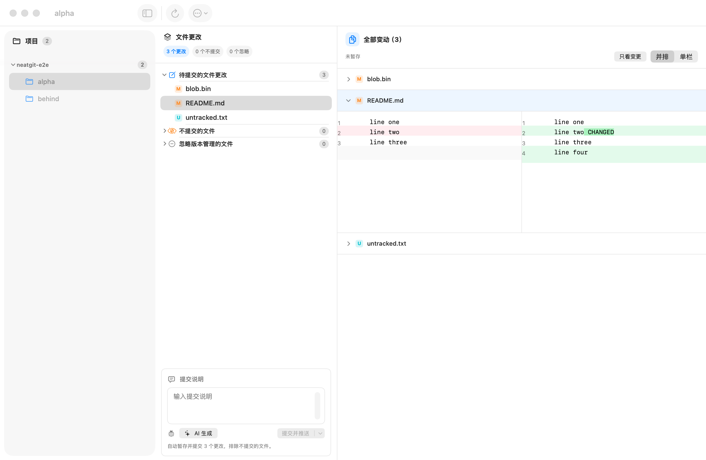
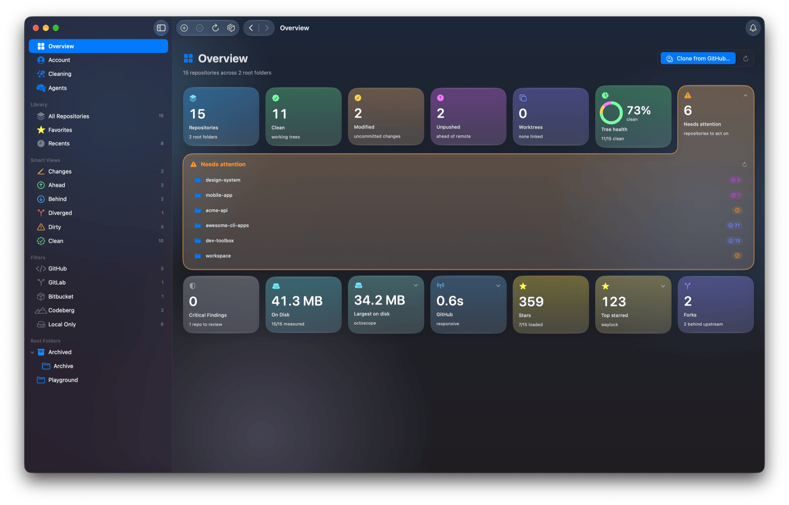
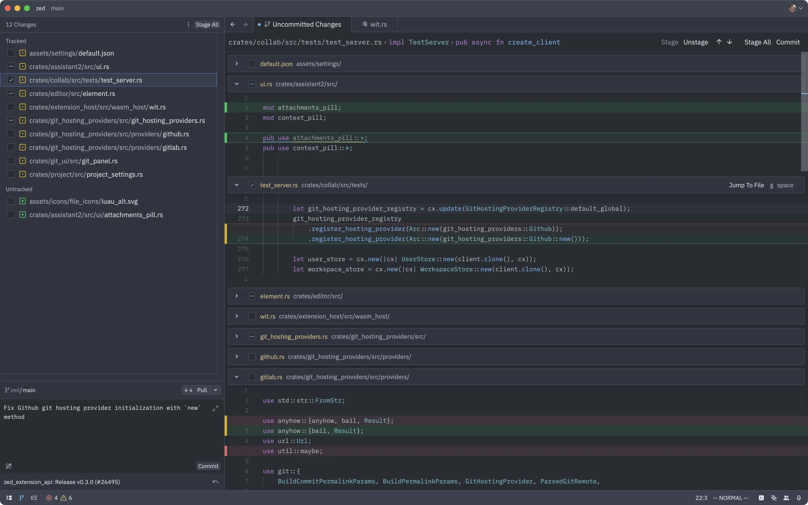
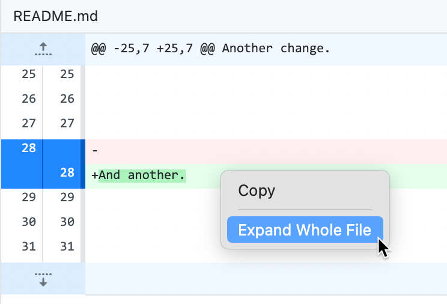
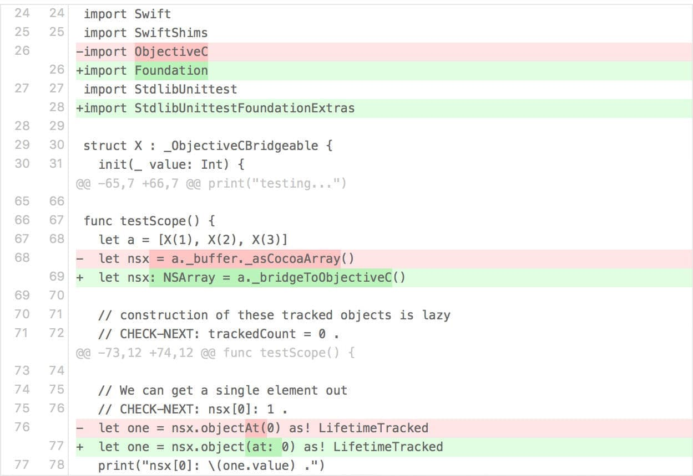
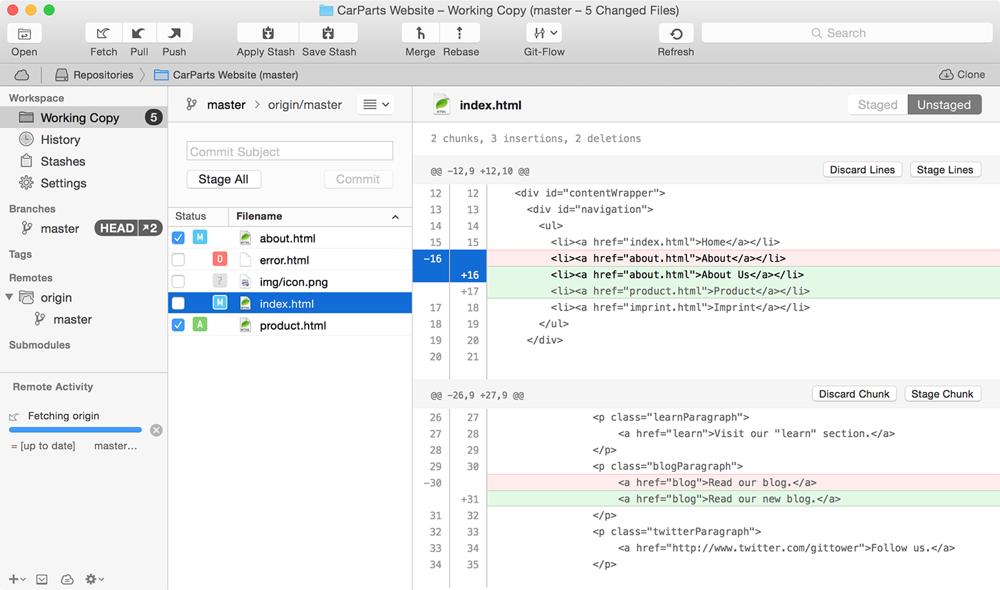
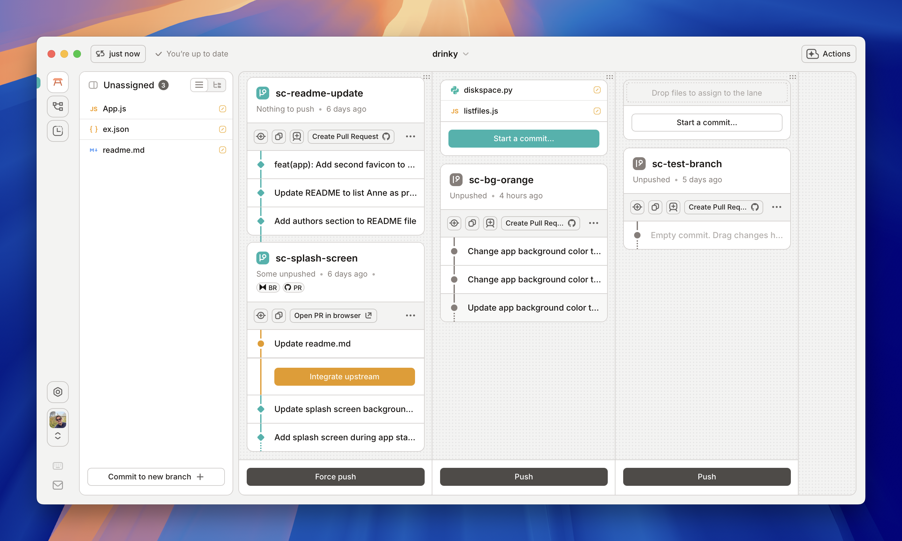

01 / FIND
待处理仓库总览
未提交、待推送、待拉取一眼可见；增加过滤，不做批量远端操作。
六个研究视角 · 七张官方界面 · 一条产品主线
主流工具正在变重，新兴工具正在引入新心智。NeatGit 的机会，是把“找到要处理的仓库、看清改动、放心提交”这条路径做得比谁都顺。

多仓库的价值不在于“全部列出来”，而在于把有改动、待推送、待拉取的项目浮到眼前。

好的差异页不是颜色更多，而是改动规模可见、导航不断档、上下文需要时能拿回来。


“只看变更”中保留展开入口，需要时多看几行，不必退出模式。

清晰块边界、增删着色和行内高亮是基础；下一版优先补导航，而不是换渲染器。

补充截图来源：GitHub Desktop · Fork
新工具最值得学的是撤销、并行工作区和清晰状态，而不是把分支模型整体换掉。

生成提交说明已是标配。真正影响体验的是规则、范围、语言风格和用户确认。

RECOMMENDED NEXT
不扩面板，不改分支模型。把已有核心路径做完整。
本版不做：虚拟分支 · PR／CI 收件箱 · 完整 Finder · 自动推送 · AI 自动解决冲突。按代码块提交先完成范围规则设计。